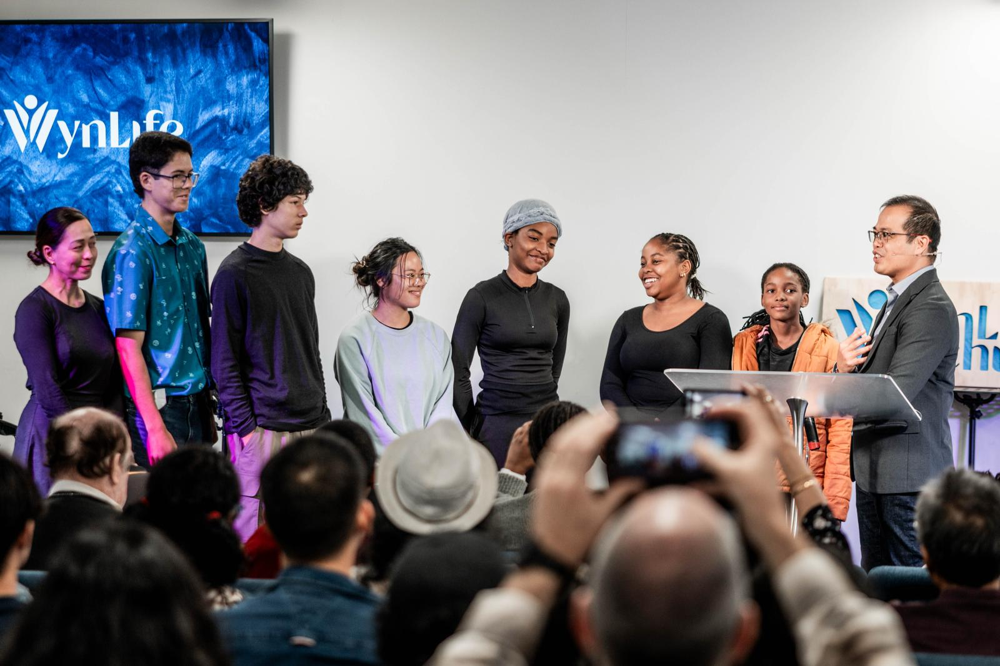
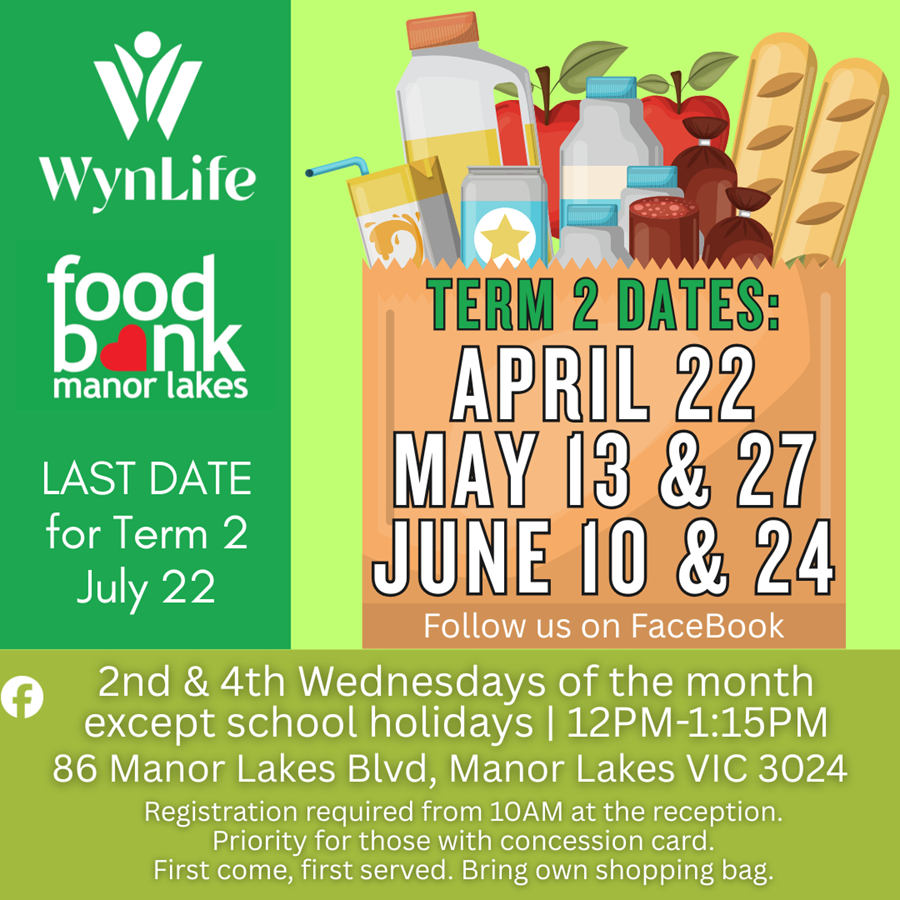
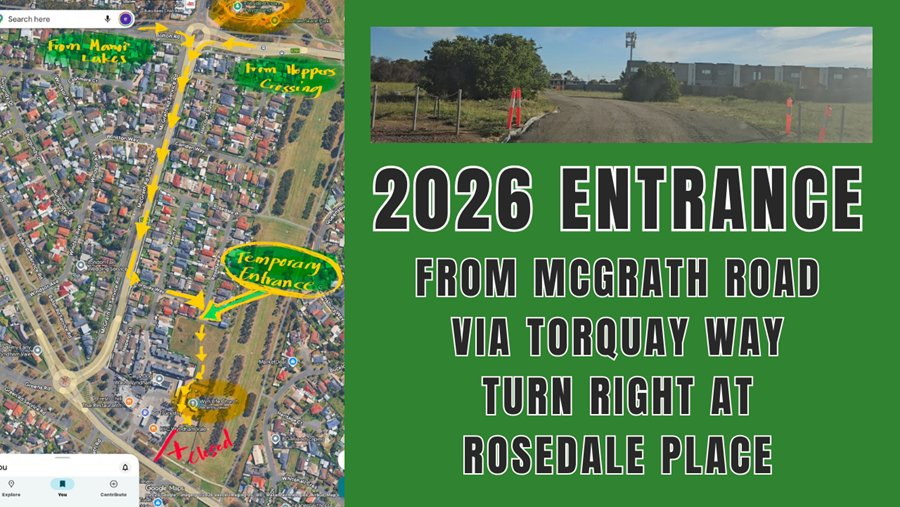
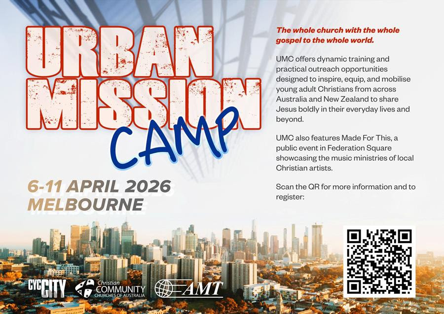

Welcome Home
A Church Where
Everyone Belongs
WynLife Church is a vibrant, multicultural community in the Wyndham area of Melbourne's west. We gather every Sunday to worship, hear from God's Word, and grow together in faith.
Whether you're exploring faith for the first time or looking for a church to call home, there's a place for you here.


Come Together
Our Gatherings
We cherish every opportunity to come together — forging connections that go beyond mere attendance.

Wednesdays · 7:00 PM
Wednesday Night Prayer
Corporate prayer and worship every Wednesday evening as a church family.
Learn more →

Weeknights · Various Locations
Life Groups
Small groups across Wyndham Vale, Werribee, Tarneit & Hoppers Crossing.
Learn more →

Men's & Women's Ministry
Men's & Women's Groups
Dedicated communities for men and women to grow together in faith and life.
Learn more →


Your Journey
Your Next Steps
We're committed to empowering you to be part of God's extraordinary mission. No matter where you are in your faith journey, there's a next step for you.
01
Get to Know Jesus
It all starts with getting to know the real Jesus.
02
Become Like Jesus
Follow Him and grow in your relationship with Him.
03
Live Like Jesus
A life of honour and purpose with God at the centre.
04
Share Jesus
The greatest news anyone has ever received — pass it on.

Stay Updated
What's On
From community events to important announcements — here's what's happening at WynLife right now.

🍞 Community Ministry
Food Bank — Manor Lakes
2nd & 4th Wednesdays, 12PM–1:15PM at 86 Manor Lakes Blvd. Registration from 10AM. First come, first served.
Learn more →

📍 Important Notice
2026 Entrance Update
Access now via McGrath Road → Torquay Way → turn right at Rosedale Place.
Learn more →

🌏 Upcoming Event
Urban Mission Camp 2026
6–11 April 2026, Melbourne. Mobilising young adults to share Jesus boldly.
Learn more →